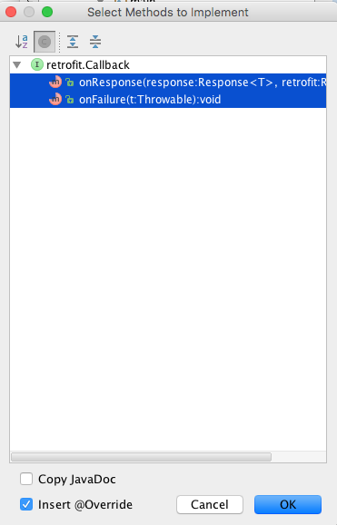

Reintroduce the Donation Android app and refactor it to interact with a donation-web API.
This is the donation android app as we left it with the Donation.4.0 lab : Donation.4.0.
If you have completed the last donation android lab, then you can use your own project. If not, use the above archive.
Open the Build.Gradle file - there are two, so make sure it is the one into the 'app' folder:
apply plugin: 'com.android.application'
android {
compileSdkVersion 25
buildToolsVersion '26.0.2'
defaultConfig {
applicationId "ie.app"
minSdkVersion 23
targetSdkVersion 25
versionCode 1
versionName "1.0"
}
buildTypes {
release {
minifyEnabled false
proguardFiles getDefaultProguardFile('proguard-android.txt'), 'proguard-rules.pro'
}
}
}
dependencies {
compile fileTree(dir: 'libs', include: ['*.jar'])
testCompile 'junit:junit:4.12'
compile 'com.android.support:appcompat-v7:25.4.0'
compile 'com.android.support:design:25.4.0'
}Then modify the dependencies section to include extra entries:
dependencies {
compile fileTree(dir: 'libs', include: ['*.jar'])
testCompile 'junit:junit:4.12'
compile 'com.android.support:appcompat-v7:25.4.0'
compile 'com.android.support:design:25.4.0'
compile 'com.squareup.retrofit2:retrofit:2.1.0'
compile 'com.google.code.gson:gson:2.8.2'
compile 'com.squareup.retrofit2:converter-gson:2.1.0'
compile 'com.squareup.okhttp3:okhttp:3.7.0'
}Now open the androidManifext.xml file - and insert this new permission entry:
<uses-permission android:name="android.permission.INTERNET"/>This should be entered before the <application> element as shown here:
<manifest xmlns:android="http://schemas.android.com/apk/res/android"
package="ie.app" >
<uses-permission android:name="android.permission.INTERNET"/>
<application
....
....
....
</manifest>You may be offered the 'Sync Now' button - press it. If not, locate it and press it (it is on the toolbar)
The project should sync successfully.
The current Donation class needs some minor adjustments. Specifically, we need to include some kind of an id field, as well as some other fields (see below):
package ie.app.models;
public class Donation
{
public String _id;
public int amount;
public String paymenttype;
public int upvotes;
public double latitude;
public double longitude;
public Donation (int amount, String paymenttype,
int upvotes, double lat, double lng)
{
this.amount = amount;
this.paymenttype = paymenttype;
this.upvotes = upvotes;
this.latitude = lat;
this.longitude = lng;
}
public String toString()
{
return _id + ", " + amount + ", " + paymenttype + ", " + upvotes + ", " + latitude + ", " + longitude;
}
}Be aware that refactoring the Donation class will result in related errors in the project so be sure to fix these before moving onto the next step.
In the 'main' package, introduce this DonationService interface and fix any import errors
public interface DonationService
{
@GET("/donations")
Call<List<Donation>> getAllDonations();
@GET("/donations/{id}")
Call<List<Donation>> getDonation(@Path("id") String id);
@DELETE("/donations/{id}")
Call<Donation> deleteDonation(@Path("id") String id);
@POST("/donations")
Call<Donation> createDonation(@Body Donation donation);
@PUT("/donations/{id}/votes")
Call<Donation> upVoteDonation(@Path("id") String id,
@Body Donation donation);
}This class will server as a local interface for interacting with the remote service (deployed to heroku).
When our App launches we want to immediately retrieve the list of Donations from the Server. We make this request in our DonationApp application class and as a result this class will require substantial additions. Here is a starter new version:
package ie.app.main;
import java.util.ArrayList;
import java.util.List;
import java.util.concurrent.TimeUnit;
import android.app.Application;
import android.util.Log;
import android.widget.Toast;
import com.google.gson.Gson;
import com.google.gson.GsonBuilder;
import ie.app.models.Donation;
import okhttp3.OkHttpClient;
import retrofit2.Call;
import retrofit2.Callback;
import retrofit2.Response;
import retrofit2.Retrofit;
import retrofit2.converter.gson.GsonConverterFactory;
public class DonationApp extends Application
{
public final int target = 10000;
public int totalDonated = 0;
public List <Donation> donations = new ArrayList<Donation>();
public DonationService donationService;
public boolean donationServiceAvailable = false;
public String service_url = "http://donationweb-4-0.herokuapp.com/";
//public String service_url = "http://10.0.2.2:4000";
//Standard Emulator IP Address
public boolean newDonation(Donation donation)
{
boolean targetAchieved = totalDonated > target;
if (!targetAchieved) {
donations.add(donation);
totalDonated += donation.amount;
}
else
Toast.makeText(this, "Target Exceeded!", Toast.LENGTH_SHORT).show();
return targetAchieved;
}
@Override
public void onCreate()
{
super.onCreate();
Log.v("Donate", "Donation App Started");
//dbManager = new DBManager(this);
Gson gson = new GsonBuilder().create();
OkHttpClient okHttpClient = new OkHttpClient.Builder()
.connectTimeout(30, TimeUnit.SECONDS)
.writeTimeout(30, TimeUnit.SECONDS)
.readTimeout(30, TimeUnit.SECONDS)
.build();
Retrofit retrofit = new Retrofit.Builder()
.baseUrl(service_url)
.addConverterFactory(GsonConverterFactory.create(gson))
.client(okHttpClient)
.build();
donationService = retrofit.create(DonationService.class);
Log.v("Donate", "Donation Service Created");
}
void serviceUnavailableMessage()
{
Toast toast = Toast.makeText(this,
"Donation Service Unavailable. Try again later",
Toast.LENGTH_LONG);
toast.show();
}
void serviceAvailableMessage()
{
Toast toast = Toast.makeText(this,
"Donation Contacted Successfully",
Toast.LENGTH_LONG);
toast.show();
}
}This version sets up a DonationService object - and makes this service object available for the activities. It also introduces a url we should use to access the remote service.
Using the lecture material and your knowledge gained so far, refactor the above class to use the DonationService object to retrieve a list of all the donations from the server and populate the donations list declared inside the DonationApp Application class.
This is a new version of the Donate Activity class - with some important omissions (marked below).
Complete the necessary functionality before moving on.
package ie.app.activities;
import android.content.SharedPreferences;
import android.graphics.Typeface;
import android.os.Bundle;
import android.support.design.widget.FloatingActionButton;
import android.support.design.widget.Snackbar;
import android.support.v7.widget.Toolbar;
import android.text.SpannableString;
import android.text.style.StyleSpan;
import android.util.Log;
import android.view.View;
import android.view.MenuItem;
import android.widget.Button;
import android.widget.EditText;
import android.widget.NumberPicker;
import android.widget.ProgressBar;
import android.widget.RadioGroup;
import android.widget.TextView;
import android.widget.Toast;
import java.util.List;
import ie.app.R;
import ie.app.models.Donation;
import retrofit2.Call;
import retrofit2.Callback;
import retrofit2.Response;
public class Donate extends Base implements Callback<Donation> {
private Button donateButton;
private RadioGroup paymentMethod;
private ProgressBar progressBar;
private NumberPicker amountPicker;
private EditText amountText;
private TextView amountTotal;
private SharedPreferences settings;
@Override
protected void onCreate(Bundle savedInstanceState) {
super.onCreate(savedInstanceState);
setContentView(R.layout.activity_donate);
Toolbar toolbar = (Toolbar) findViewById(R.id.toolbar);
setSupportActionBar(toolbar);
FloatingActionButton fab = (FloatingActionButton) findViewById(R.id.fab);
fab.setOnClickListener(new View.OnClickListener() {
@Override
public void onClick(View view) {
Snackbar.make(view, "Replace with your own action", Snackbar.LENGTH_LONG)
.setAction("Action", null).show();
}
});
donateButton = (Button) findViewById(R.id.donateButton);
paymentMethod = (RadioGroup) findViewById(R.id.paymentMethod);
progressBar = (ProgressBar) findViewById(R.id.progressBar);
amountPicker = (NumberPicker) findViewById(R.id.amountPicker);
amountText = (EditText) findViewById(R.id.paymentAmount);
amountTotal = (TextView) findViewById(R.id.totalSoFar);
amountPicker.setMinValue(0);
amountPicker.setMaxValue(1000);
progressBar.setMax(10000);
amountTotal.setText("$" + app.totalDonated);
settings = getSharedPreferences("loginPrefs", 0);
String username = settings.getString("username", "");
TextView donateUsername = (TextView) findViewById(R.id.donateUsername);
SpannableString spanString = new SpannableString(username);
//spanString.setSpan(new UnderlineSpan(), 0, spanString.length(), 0);
spanString.setSpan(new StyleSpan(Typeface.BOLD), 0, spanString.length(), 0);
spanString.setSpan(new StyleSpan(Typeface.ITALIC), 0, spanString.length(), 0);
donateUsername.setText(spanString);
}
public void donateButtonPressed (View view)
{
String method = paymentMethod.getCheckedRadioButtonId() == R.id.PayPal ? "PayPal" : "Direct";
int donatedAmount = amountPicker.getValue();
if (donatedAmount == 0)
{
String text = amountText.getText().toString();
if (!text.equals(""))
donatedAmount = Integer.parseInt(text);
}
if (donatedAmount > 0)
{
Donation donation = new Donation(donatedAmount, method,0,0.0,0.0);
//////////////////////////////////////////////////
// Retrofit Call to Create a Donation goes here //
//////////////////////////////////////////////////
}
amountText.setText("");
amountPicker.setValue(0);
}
@Override
public void reset(MenuItem item)
{
app.donations.clear();
app.totalDonated = 0;
amountTotal.setText("$" + app.totalDonated);
}
@Override
public void onResponse(Call<Donation> call, Response<Donation> response)
{
Toast toast = Toast.makeText(this, "Donation Accepted", Toast.LENGTH_SHORT);
toast.show();
getAllDonations();
}
@Override
public void onFailure(Call<Donation> call, Throwable t)
{
Toast toast = Toast.makeText(this, "Error making donation", Toast.LENGTH_LONG);
toast.show();
}
public void getAllDonations() {
Call<List<Donation>> call2 = (Call<List<Donation>>) app.donationService.getAllDonations();
call2.enqueue(new Callback<List<Donation>>() {
@Override
public void onResponse(Call<List<Donation>> call, Response<List<Donation>> response) {
Log.v("retrofit","JSON = " + response.raw());
//////////////////////////////////////////////////////
// Update the donations list and related variables //
// and widgets to ensure a consistent value for the //
// total amount donated and the progress bar value //
//////////////////////////////////////////////////////
app.donationServiceAvailable = true;
}
@Override
public void onFailure(Call<List<Donation>> call, Throwable t) {
app.donationServiceAvailable = false;
Log.v("retrofit",t.getMessage());
app.serviceUnavailableMessage();
}
});
}
@Override
public void onResume() {
super.onResume();
getAllDonations();
}
}Run the app now (make sure the web service is awake and running). You should get the 'Donation Contacted Successfully' and/or 'Donation Created Successfully' messages. If not, we will need to discover why before proceeding to next steps...
We will take Report step by step this time to gain a better understanding of how the service is accessed.
First, in Report Activity, bring in these imports:
import retrofit2.Call;
import retrofit2.Callback;
import retrofit2.Response;Now implement the following interface in the class:
public class Report extends Base implements OnItemClickListener,
OnClickListener,
Callback<List<Donation>> {This will cause an error - and android studio may be able to suggest fixes via the following menu:

Which will generate these methods:
@Override
public void onResponse(Call<Donation> call, Response<Donation> response)
{
}
@Override
public void onFailure(Call<Donation> call, Throwable t)
{
}Add the following Call object reference to the Class
Call<List<Donation>> call1;and in the onCreate method, initialise and execute the call, like so
call1 = app.donationService.getAllDonations();
call1.enqueue(this);... and finally, the response/error methods can be implemented:
@Override
public void onResponse(Call<List<Donation>> call, Response<List<Donation>> response) {
app.donations = response.body();
adapter = new DonationAdapter(this, app.donations);
//adapter.notifyDataSetChanged();
listView.setAdapter(adapter);
}
@Override
public void onFailure(Call<List<Donation>> call, Throwable t) {
Toast toast = Toast.makeText(this, "Error retrieving Donations", Toast.LENGTH_LONG);
toast.show();
}Run this now - and you should see a list of donations - but now these donations are stored on the server and not the device.
Check the api to confirm this
Also check the specific list of donations via the web app:
(note the # in the above uri)
We haven't looked at retrieving an individual donation via an onClick event, but if we did, we might use something like this:
@Override
public void onItemClick(AdapterView<?> arg0, View row, int pos, long id) {
String _id = row.getTag().toString();
Call<List<Donation>> call2 = app.donationService.getDonation(_id);
call2.enqueue(new Callback<List<Donation>>() {
@Override
public void onResponse(Call<List<Donation>> call,
Response<List<Donation>> response) {
Toast toast = Toast.makeText(Report.this, "Donation : " +
response.body() + " Selected.", Toast.LENGTH_LONG);
toast.show();
}
@Override
public void onFailure(Call<List<Donation>> call, Throwable t) {
Toast toast = Toast.makeText(Report.this,
"Error retrieving Donation", Toast.LENGTH_LONG);
toast.show();
}
}
);
}and for deleting, we might use something like this:
Call<Donation> call3 = app.donationService.deleteDonation(donation._id);
call3.enqueue(new Callback<Donation>() {
@Override
public void onResponse(Call<Donation> call, Response<Donation> response) {
call1 = app.donationService.getAllDonations();
call1.enqueue(Report.this);
//adapter.notifyDataSetChanged();
}
@Override
public void onFailure(Call<Donation> call, Throwable t) {
Toast toast = Toast.makeText(Report.this, "Error deleting Donation", Toast.LENGTH_LONG);
toast.show();
}
}
);but that's for another day :)
This is the Solution to the lab : Donation.4.1.
And this is the Solution to CoffeeMate.5.1 (I think it works??!!): CoffeeMate.5.1.